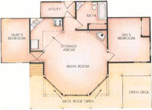

Choice Not Chance
What can happen when quality is consciously substituted for quantity in a home, including connections, design, craft, flexibility, synthesis, diagrams and cross section.
By the Mother Earth News editors
July/August 1987
What can happen when quality is consciously substituted for quantity in a home?
The most basic rule of house building is that, no matter how modest the design, there's never enough money. The fundamental question then is, on a finite budget, what's most important to you? Some adopt the warehouse approach, maximizing square footage. For others, baubles please: an Italian marble spa, perhaps, with gold-plated faucets. Even something that seems as eminently practical as energy efficiency can become a single-minded obsession.
In this game of priorities, the trick is to strike a balance without feeling compromised. To do so requires strategy. When Ira Friedlander decided to build a house for himself and his son, Nuri, he started from a strategic position. Their home would be as small as possible while being comfortable. Quality of space would substitute for quantity.
By deciding to see how little area they needed, Ira and his collaborator, architect-builder Hadi Clements, started from a focus of strength. They would concentrate Ira's funds, Hadi's skills and their combined intellect on little more than 900 square feet-700 indoors and 200 in outdoor decks.
Ira Friedlander and his son, Nuri, sought a place of creative solitude and a center to safely explore the outdoors. They found it on three acres in Shaker country.
Connections
This was to be a place of tranquillity for Ira-a writer and designer/artist who is a Mother Earth News art director-to gather energy for creative work and for Nuri to relax and explore the outdoors. Such a house should fit like a favorite shirt: often unnoticed, easy to stretch in, comfortable at any time of day. Influenced by Egyptian architect Hassan Fathy's ideas about the connection between the inside and the outside, and equipped with a knowledge of ancient Arabic design, Ira formulated his house concept quickly and prepared drawings. At the same time, he and Hadi agreed that the design should be allowed to evolve as the house was built.
Interaction between client, builder and architect, and the ability to revise along the way, are fundamental parts of Hassan Fathy's views of architecture. In Architecture for the Poor, he laments the lack of adaptability in today's construction system. Typically, the architect designs with a small to moderate amount of contact with the customer and then does little but see that the contractor follows the drawings. Ira and Hadi's working arrangement went a long way toward precluding such problems by keeping them both involved throughout.
Â
Design
The core of the house is an octagonal room with a high ceiling, reminiscent of a mosque. Small windows high in the walls permit convective ventilation and allow patches of light to trace across the walls. Triangular spaces of kitchen, bathroom, stove nook and raised deck play geometrically off the eight-sided center. The triangles and octagon unite in the ceiling where the eight sides blend through timber squinches to the four panels of the roof. These triangles taper to the peak in finely mitered, clear white pine boards. Sleeping rooms extend to the east and west, Nuri's separated by a small corridor for quiet in the evening.
To create a sense of openness that would belie the actual square footage, windows were carefully positioned to include the outdoors as part of the visual space. Dark timbers carry the line of sight from the ceiling through six-foot-wide expanses of glass on the south, southeast and southwest sides of the octagonal main room to offer a panorama of woods, grass and sky (through openings in the deck roof). Simple sliding units in the bedrooms greet the morning. A kitchen skylight and two small north-side windows-casement in the bath and awning in the kitchen-provide natural lighting.
To ensure solitude, Ira picked a three-acre site that backs onto 50 acres of undevelopable woods. Neighbors are barely visible in winter, not at all in summer. Cars park 100 feet away and out of sight at the end of a 700-foot driveway leading from a little-traveled country road. Even this decision involved a bit of a compromise. Ira had originally wanted the only access to the house to be by foot bridge, but bowed to the need of occasionally getting close with a car.
As the interior layout works subtly with the outdoors, the house's brown facade blends into the pines, quietly attractive as a Japanese teahouse; a house to be looked out from, rather than looked at.
The Octagon and triangle work together to marry various spaces geometrically.
Windows and lines of sight carried by timbers link the inside with the outdoors. Light traces across the walls through small, high windows. From the couch, there's a clear view of the sky through a triangular opening in the deck's roof outside.
Craft
Hadi did most of the construction by himself, hiring helpers only for heavy work, such as placing pine timbers for the post-and-beam frame. Showing an unusual blend of talents, he switched from architect to mason to plumber to electrician to framer to trim carpenter to tile setter to cabinetmaker.
The tile work, in particular, is an important detail element that links the geometric pieces of the interior. Kitchen floor and stove nook tiles are the same and are tied by a band that wraps around the perimeter of the oak parquet floor of the main room. Mexican tiles on the backsplash and counter edge in the kitchen are repeated in the bathroom above and below a band of two-inch gray tile. Two hand-painted Portuguese tiles visually brace the woodstove in its nook.
Hadi's cabinetwork-all custom oak carried even to the window trim-speaks for itself, but it took a few years for Ira to fully appreciate how tightly the house is sealed. A Fisher Grandma Bear woodstove heats the house easily, even on frigid upstate-New York winter nights. It takes a few hours to fully heat the extensive tile work of the wood-stove bay, but steady warmth through the night is the reward. Four years after moving in, Ira and Nuri are still burning cordwood from trees that were cleared for construction.
To distribute the warmth to the sleeping rooms and bathroom, fans pick up heat from the ceiling of the central room and force it into the wings. Individually wired to rheostats, they are quiet and effective.
Flexibility
Hadi began work in the spring of 1982 and took nine months to finish-not a leisurely pace but one that allowed owner and builder to carefully consider each design element before committing themselves irrevocably.
As the construction progressed, they recognized where improvements could be made in the design. With the framing in, it became obvious that the triangular bathroom needed more space. It became rectilinear, extending unnoticed to the north side of the house. At the same time, they decided to put in a small corridor, similar to the one that leads to Nuri's bedroom, to ensure privacy and to better separate the bath and main room.
With the walls in, Ira also concluded that the windows they'd planned high in the main room would be too big. The effect of the patches of light moving across the walls during the day would be lost. After discussion, Hadi switched to smaller windows: horizontal sliders to the east and west, and a fixed unit in the south wall.
Synthesis
There are two important ways that the evolution of the Friedlanders' house departs from the norm-two keys to its success. First, Ira participated in the design, and thus took responsibility for the result. He had a clear goal from the beginning-quality, not quantity, of space-and participated as it evolved. He accepted the fact that for what he would spend in tile, oak and Hadi's handiwork, he could have had another room. Second, Hadi himself is a sort of Renaissance builder. Rare is the person who has the benefit of an architect's training yet still wields a hammer. Rarer still is the craftsman who possesses all the diverse skills needed to build a house.
The synthesis of design and construction talents-owner, builder and architect-translated directly into the home. It made possible what too often is never even imagined.
Editor's Note: If you'd like to explore the work of Hassan Fathy further, see Architecture for the Poor , University of Chicago Press, $11.95 in paperback.
 PHOTOGRAPHS © BROWNIE HARRIS PLAN VIEW |
|
|
|
 |
|
|